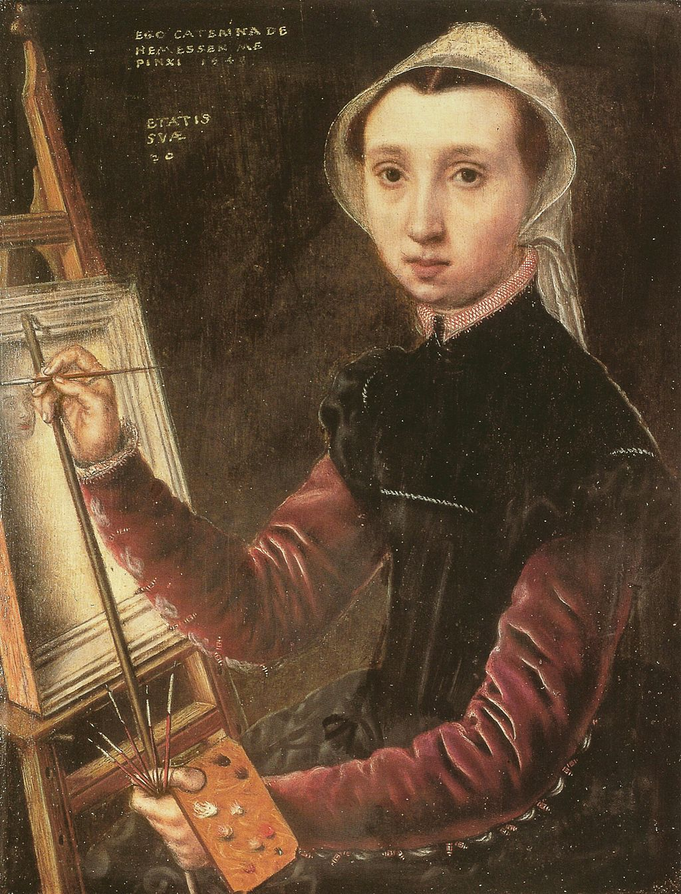

<head>
<meta charset="UTF-8" />
<meta name="keywords" content="drawing, painting" />
<meta name="description" content="drawings by Sunjy" />
<title>Sunjy</title>
<link rel="shortcut icon" type="image/x-icon" href="../../mImages/mCommon/favicon.ico" media="screen" />
<link rel="stylesheet" type="text/css" href="../../mCsses/mCommon/mCssA.css" />
<link rel="stylesheet" type="text/css" href="../../mCsses/mCommon/mCssB.css" />
<link rel="stylesheet" type="text/css" href="../../mCsses/mCommon/mCssC.css" />
<link rel="stylesheet" type="text/css" href="../../mCsses/mCommon/mCssD.css" />
<link rel="stylesheet" type="text/css" href="../../mCsses/mContent/mCssA.css" />
<link rel="stylesheet" type="text/css" href="../../mCsses/mContent/mCssB.css" />
<link rel="stylesheet" type="text/css" href="../../mCsses/mContent/mCssC.css" />
<link rel="stylesheet" type="text/css" href="../../mCsses/mContent/mCssD.css" />
</head>
<script type="text/javascript" src="../../mScripts/mContent/mContentAA.js" /></script>
<script type="text/javascript" src="../../mScripts/mContent/mContentAB.js" /></script>
<script type="text/javascript" src="../../mScripts/mContent/mContentAC.js" /></script>
<script type="text/javascript" src="../../mScripts/mContent/mContentAD.js" /></script>
<script type="text/javascript"></script> 
<script type="text/javascript">
document.write('<div class="mImgAbsolute"></div>');
/*
document.write('<p class="mFontSizeBColor" />From a white paper...</p>');
document.write('<table class="center"><tr><td>');
document.write('');
document.write('</td></tr></table>');
*/
</script>


<script type="text/javascript">
document.write('<p class="mFontSizeBColor" />Self-Portrait</p>');
document.write('<p class="mFontSizeSColor" />“Self-Portrait” by Catharina van Hemessen depicts the artist when she was 20 years old. It is considered the first self-portrait of any artist depicted working at an easel.<br><br>Her father, Jan Sanders van Hemessen was a painter in Antwerp and her teacher. This portrait, created in 1548, shows the artist in the early stages of painting a portrait.<br><br>She was a successful painter, and her paintings can be found at the Rijksmuseum in Amsterdam, the National Gallery, London, and the Kunstmuseum Basel.<br><br>Her paintings have a quiet dignity to them and tend to be small with plain dark backgrounds that provide no sense of location or space.<br></p>');
document.write('<table class="center" /><tr><td>');
document.write('<br>Her father, Jan Sanders van Hemessen was a painter in Antwerp and her teacher. This portrait, created in 1548, shows the artist in the early stages of painting a portrait.<br><br>She was a successful painter, and her paintings can be found at the Rijksmuseum in Amsterdam, the National Gallery, London, and the Kunstmuseum Basel.<br><br>Her paintings have a quiet dignity to them and tend to be small with plain dark backgrounds that provide no sense of location or space.<br>" />');
document.write('</td></tr></table>');
</script>


